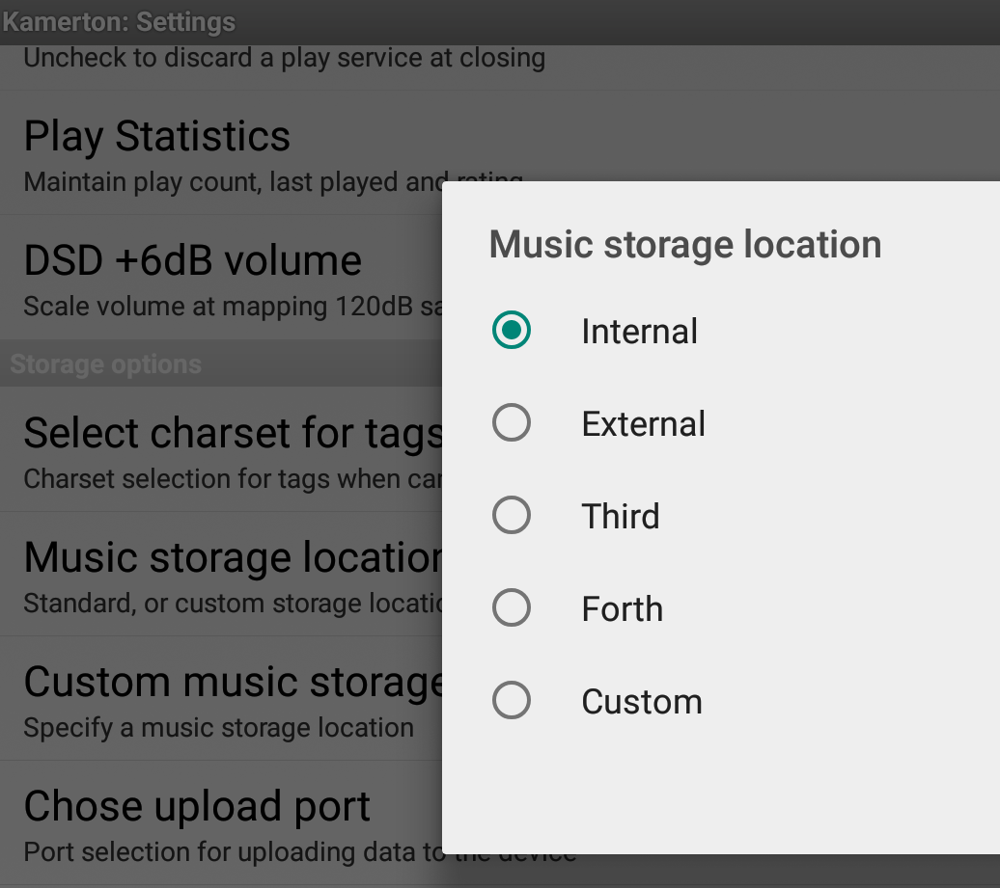

Welcome to Kamerton developer web site
Our mission
Our mission is providing a highest quality of music reproduction everywhere, on your desktop, laptop, Raspberry Pi, and of course on smaller brothers as Android devices. Although we can observe many debates on the Net that 16 bits 44100 Hz format is sufficient for very picky listeners, our research showed that quality difference is really observable when you jump to 24bits 96000 Hz or even 192000 Hz formats. The sampling theorem of Kotelnikov is just a theoretical work related to a signal transmission, but people mistakenly trying to apply it for listening music. We live in an analog world, and if we do a quantization, then we should reduce an impact of it as much as modern technologies allow it. Unfortunately an average Android device is far away from a real audiophile quality device, however life is changing fast and better quality devices can be expected soon. Needless to say that the actual push to devices such as Android smart phones was coming from portable music players like iPod. So we expect a second wave which will bring a smart phone up on to a level of the finest music players. And certainly good software capable to leverage all potential of hardware is really important.
About the program
Kamerton is an Android audiophile quality audio player which shares a common platform of high quality music players for any platform and taste. The application is targeted to a reasonably small audience of people who prefer quality over quantity, who prefer content over form. The player specifically restricted for playback only lossless audio files. It has a simplified user interface and generally considers that a listener already prepared certain directories structures where music is stored. So here are no search capabilities, however capabilities to manage file system organization are rich. User interface is also ascetic because graphics and animation can just distract serious listeners. Kamerton still provides ability to read tags and providing a basic description about a listened fragment. Any highest quality music file will be played by the app; however due to Android hardware restriction, a gradual down sampling can happen. The process of down sampling is really expensive from point of view CPU resources, so Kamerton keeps a balance between a down sampling quality and used resources. Compression ratio varies from a format to a format so you can expect better result with FLAC format and really bizarre situation with highest compression insane of DST format. Authors of the app actively work as on improvement of performance of unpacking algorithms as on quality of down sampling providing finest dithering reducing impact quality degradation. Needless to say that Kamerton will provide non compromised audio quality when an external DAC is used over OTG.
Introduction in the user interface
Kamerton is a file explorer type of a music player. It assumes that a user organizes music files in his/her own way. There is no database because Kamerton assumes that user can use a removable storage for music content and a database simply can’t provide accurate information about availability of music files. Since a capacity of memory cards tremendously increased recent time, authors of the program working on search capabilities.
Getting started
First a user needs to put some music files in base smartphone storage or on a memory card. If an internal storage is used, then it is more likely already pre-seeded with a music directory and Kamerton will look in it automatically. However if memory card is used for the purpose, it has to be initialized with some directory structure first. So here is a procedure describing setup a new memory card of 64Gb capacity.
Preparing a card for a work.
A microSD card with 64Gb or bigger capacity is coming preformatted in exFAT which most Android phones do not understand. So when such card is inserted in a phone, it will report like unreadable card and offer its formatting. If formatting wasn’t offered, then a user needs manually to navigate in general settings and initiate a card formatting. A formatting memory card option location is Android version dependent, so consult with a user guide of your phone if you can’t find it. As a card formatting is finished, directory Music should be created there. Using Kamerton itself is the best way to do that. Launch Kamerton and then invoke basic menu. The basic menu appears as 4 horizontal lines on bottom edge of phone screen (older phones) or as 3 vertically aligned square dots on right bottom edge of screen (on newer phones). You can check for variants of its location on the
page. When the menu is opened, then select Settings. Navigate to option Music Storage and tap it. Provide a single slash (/) as a storage location and hit Ok.

Kamerton file explorer will show you a top level directory of a phone, so you can navigate to a directory with name sdcard. Please note that the directory name can be different for different phones and Android OS flavors. So more likely you need to look for a directory which name is similar to sdcard. If you do not see anything like that, then try to step in mnt or media directory.
When you step in the directory sdcard or some equivalent for your phone, it should appear as empty or perhaps already have Android and LOST.DIR directories. As a quick confirmation test that it is a right directory you can tap Kamerton’s music upload button
and then using a browser either on a phone or a desktop to navigate to the provided web address.
Note, if you use a phone web browser, then do not terminate the upload screen, so do not use Back button, use just Home button and then launch a browser. Check card size in a page in a web browser, it should say something 59.4Gb for 64Gb card.
When the card location is confirmed, you can create Music directory there. Do a long tap on the orange header to get a context menu popup. Select New Directory and then type Music.
Navigate to the just created Music directory and start creation of your music collection directories structure there. It is recommended to make Music directory as a top (or root) directory for Kamerton. It can be done by opening Settings menu and specifying Music Storage location to it. Specifying it as an empty value should make your Music directory resolved automatically by Android. However if it didn’t happen, then you need to provide a full path to the directory. The best way to get the full path is again using the upload screen and then capturing it in a browser.
Copying music. There are many possibilities to copy music to the Music directory. If you use memory card, then you can just pull it from phone and use PC for copying. It will be the fastest way. You can also mount memory card of your phone directly to PC using USB (older phones). For new phones mounting options will be determinate by your PC OS and possibly an additional music management software. Kamerton supports also copying music over Wi-Fi. Navigate to a directory where you want to copy music to and then tap upload button. Point PC browser to the provided location and select music files to be copied. Multiple files can be selected. Speed of copying can be not really fast, so it is recommended to connect a phone to a power supply to avoid exceeding draining a battery.
Music organization. Since there are different software for ripping CDs and vinyl records, your music can appear in separate track files or a complete album image file. Regardless of a single file or multiple files, it is recommended to store every album in own directory. You can always use playlists if want to play some album tracks mix. It is recommended even for multi volume albums. If your software doesn’t support embedded tagging and album arts, you can always add surrounding CUE file and artwork. Make sure that artwork files are in jpeg format and less than 1Mb. Up to 5 artwork files are supported. No any assumption in name of artwork happens, it is another reason to keep album related files in an own directory. Next random album navigation does also use the assumption as one directory is one album.
Playing music. Taping music file name initiates its playback. There is no stop button, so playback can be only paused. If you want to switch to listen to other music just switch to an explorer screen and navigate to a next desirable track. Regardless if currently played music was paused or not, a new selected file starts playback. Here is one exception, if a play mode is Jukebox, then every selected file will be just queued, and currently played music will remain the same. You need to press skip button to navigate to a next music file in the queue. If you play an image of an album you can navigate to listen to a specific track when CUE information is available. Switch to the track screen and select a desired track. If you switch to the screen just for viewing tracks you can return back without a track switching tapping an orange header. Taping to artwork image will enlarge it. If multiple artworks are available, scrolling arrow will be shown. If you listen over Bluetooth streaming, then you can pause/play, skip and switch to a next album using Bluetooth controls. You can reset audio track (blue button), navigate to equalizer (small orange button on right), and switch playback mode (small orange button on right). Arrows on sides of playback progress bar allow skipping ten seconds in corresponding direction.
Play lists. M3U based playlists are supported including creation and editing. A playlist can be created in any directory. A long tap on an orange header brings a menu with option New Playlist.
Any desirable name of playlist can be specified. A long tap on a music file or a track will bring a popup menu with item Get.
Multiple files can be gotten before added to a play list. Return in a playlist and do a long tap on a header to add play content in beginning of the list or on an existing item to add after.
If a return directory item is long tapped then no adding will happen, however all selected files will be forgotten. If items in a playlist need to be rearranged in an order, then combination of Cut and Add operations should be used. Use Cut with Add to a return directory to permanently delete an item from the list. Playback of files in a play list behaves the same as all play items were belonging to a directory. In acknowledge of that a non empty play list can't be deleted. If an externally created play list file is edited, then it will lose portability. So Kamerton created M3U files can’t be used in other systems, although they can be reused by other music players installed on the same phone.
Externally created play lists with relative music file paths can be wiped by Android at remounting or updates of memory card. It can be prevented by creation of .nomedia file along of them. Kamerton can create the file automatically when Disable media autoscan option is checked off.
As you can see the user interface of Kamerton is very ascetic and intuitive.
Consumer interaction
We are very concerned about your satisfaction with our software and would like to hear your feedback.
The feedback form will be available soon.